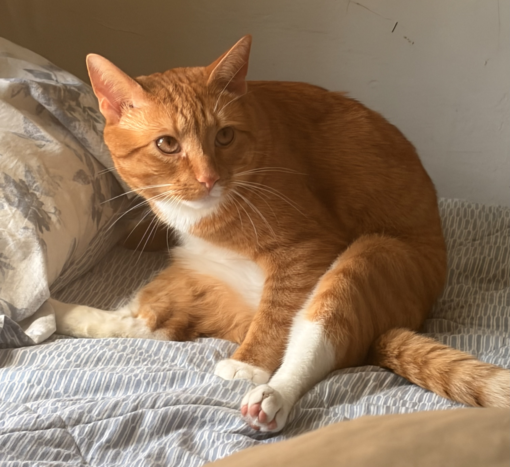

When I first started thinking about this project, I wanted to create a little cat moving around the screen while the clock was running, similar to the desktop pets from Shimejis. After that, I thought it would be fun to represent a cat's daily routine instead. At first, I planned to use GIFs that I found online, but I decided it would feel more personal if I made the animations myself. In the end, Cat O'Clock became a clock based on my own cat and its everyday routine. Depending on the time of day, the cat changes what it is doing—sleeping, stretching, playing, or relaxing. The project represents the passing of time through my cat's daily habits instead of using a traditional clock.

This is my cat, the inspiration behind Cat O'Clock. The animations and activities are based on its daily routine.